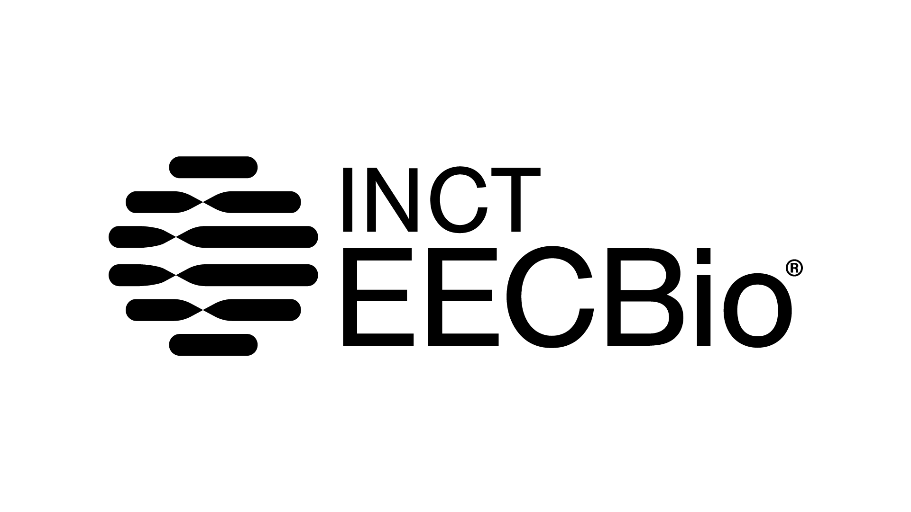

Softwares¶
Nesta página estão listados os softwares atualmente disponíveis globalmente no servidor do LGBio.
Solicitação de Softwares
Caso necessite de um software que não esteja disponível nesta lista, solicite a instalação através do formulário disponível na página inicial.
| Programa | Versão | Descrição | Repositório |
|---|---|---|---|
| ABySS | 4.2.1 | O ABySS é um montador de sequências de novo, desenvolvido para leituras curtas de extremidades pareadas (paired-end) e genomas de todos os tamanhos. | Link |
| ALTER | 1.3.4-3 | ALTER significa ALignment Transformation EnviRonment (Ambiente de Transformação de Alinhamentos) e consiste em um conjunto de componentes de software destinados à conversão entre diferentes formatos de arquivos de alinhamento múltiplo de sequências (Multiple Sequence Alignment). | Link |
| AMAP | 2.2 | Ferramenta de linha de comando em bioinformática usada para realizar alinhamento múltiplo de sequências proteicas. | Link |
| AUGUSTUS | 3.4.0 | O AUGUSTUS é um programa para encontrar genes e suas estruturas em um ou mais genomas. | Link |
| Barbell | 0.3.3 | Ferramenta para análise e modelagem de redes estruturais e biomoleculares. | Link |
| Beagle | 5.1 | Pacote de software para imputação de genótipos, inferência de fase de haplótipos e associação genética. | Link |
| BEDtools | 2.29.1 | Conjunto poderoso de ferramentas para manipulação e análise de intervalos genômicos (Formatos BED, BAM, VCF, GFF). | Link |
| Bowtie 2 | 2.4.5 | Ferramenta ultrafasta e eficiente em memória para alinhamento de sequências de DNA curtas a genomas de referência. | Link |
| Bowtie | 1.2.3 | Alinhador ultrafast e de baixo consumo de memória para leituras curtas de sequências de DNA. | Link |
| BWA | 0.7.17-r1188 | Burrows-Wheeler Aligner (BWA) é um pacote de software para mapeamento de sequências de DNA contra genomas de referência de grande porte. | Link |
| BUSCO | 6.0.0 | - | - |
| cdbfasta | 0.99 | Ferramenta para indexação e recuperação rápida de registros de arquivos FASTA e FASTQ. | Link |
| Clustal Omega | 1.2.4 | Clustal Omega é uma ferramenta de alinhamento múltiplo de sequências (MSA) de alta velocidade para DNA, RNA e proteínas. | Link |
| ClustalW | 2.1 | Ferramenta clássica para alinhamento múltiplo de sequências de nucleotídeos ou aminoácidos. | Link |
| DIALIGN-TX | 1.0.2-12 | Segmento atualizado do programa DIALIGN para alinhamento múltiplo de sequências de DNA ou proteínas baseado em segmentos. | Link |
| DIALIGN | 2.2.1-10 | Ferramenta de alinhamento múltiplo de sequências que compara segmentos sem penalidade de lacunas (gaps) globais. | Link |
| DIAMOND | 0.9.30.131 | Alinhador altamente eficiente e ultrarrápido para sequências de proteínas e tradução de DNA contra bancos de proteínas. | Link |
| EMBOSS | 6.6.0.0 | EMBOSS (European Molecular Biology Open Software Suite) é um pacote integrado de ferramentas gratuitas para análise de dados moleculares. | Link |
| Exonerate | 2.4.0 | Ferramenta versátil para alinhamento de sequências que permite mapear sequências de DNA e proteínas a genomas. | - |
| FastQC | 0.11.9 | Ferramenta de controle de qualidade para dados de sequenciamento de alto rendimento (High-Throughput Sequencing). | Link |
| FSA | 1.15.9 | Fast Statistical Alignment (FSA) é um alinhador múltiplo de sequências baseado em modelos estatísticos probabilísticos. | - |
| GEMMA | 0.98.1 | Genome-wide Efficient Mixed Model Association (GEMMA) é uma ferramenta para estudos de associação genômica ampla (GWAS). | Link |
| GenomeTools | 1.6.1 | Conjunto versátil de ferramentas de software para análise e manipulação de genomas e arquivos GFF3. | Link |
| GenomeScope 2.0 | - | Estimativa de tamanho de genoma, heterozigosidade e repetições a partir de perfis de k-meros. | Link |
| HMMER | 3.3 | Pacote de software para análise de sequências biológicas utilizando modelos ocultos de Markov (HMMs). | Link |
| HyPhy (MPI) | 2.5.1 | Versão paralela com suporte a MPI do programa HyPhy para hipóteses de evolução molecular em clusters de computação. | Link |
| Infernal | - | INFERNAL (INference of RNA ALignment) busca por homólogos de sequências e estruturas secundárias de RNA em bancos de dados. | Link |
| IQ-TREE | 1.6.12 | Software eficiente para inferência filogenética por Máxima Verossimilhança com suporte a seleção de modelos. | Link |
| IQ-TREE 2 | 2.2.0 | Software eficiente para inferência filogenética por Máxima Verossimilhança com suporte a seleção de modelos. | Link |
| IQ-TREE 3 | 3.0.1 | Software eficiente para inferência filogenética por Máxima Verossimilhança com suporte a seleção de modelos. | Link |
| Jellyfish | 2.3.0 | Ferramenta rápida e eficiente em memória para contagem de k-meros em sequências de DNA. | Link |
| jModelTest | 2.1.10 | Ferramenta para a seleção estatística de modelos de substituição de nucleotídeos para análises filogenéticas. | Link |
| Kalign | 2.04 | Alinhador múltiplo de sequências de DNA e proteínas ultrarrápido projetado para grandes conjuntos de dados. | Link |
| MAFFT | v7.503 | Programa popular de alinhamento múltiplo de sequências de nucleotídeos ou aminoácidos de alta velocidade e precisão. | Link |
| MAQ | 0.7.1 | Mapping and Assembly with Qualities (MAQ) é um alinhador legado de leituras curtas contra genomas de referência. | Link |
| Mauve | 2.4.0 | Sistema de alinhamento múltiplo de genomas completos para identificar rearranjos cromossômicos e rearranjos ortólogos. | Link |
| MCL | 1.14 | Markov Cluster Algorithm (MCL) é um algoritmo de agrupamento não supervisionado baseado em simulação de fluxos em grafos. | Link |
| Minimap2 | 2.24-r1122 | Alinhador versátil para sequências longas de DNA/RNA (PacBio/Nanopore) e montagens contra genomas de referência. | Link |
| mothur | 1.42.1 | Pacote de software completo para processamento e análise de dados de microbioma e amplicons de 16S/18S rRNA. | Link |
| MUMmer | 4.0.0beta2 | Sistema versátil para alinhamento rápido de genomas inteiros e comparação de grandes sequências. | Link |
| MUMmer (versão pelo bioconda) | 3.23 | Sistema versátil para alinhamento rápido de genomas inteiros (Versão 3 via Conda). | Link |
| MUSCLE | 3.8.1551 | Multiple Sequence Comparison by Log-Expectation é um software popular para alinhamento de sequências de proteínas e nucleotídeos. | Link |
| MUSTANG | 3.2.3 | Multiple Structural Alignment Algorithm é uma ferramenta para alinhamento estrutural de proteínas em formato PDB. | Link |
| NCBI BLAST+ | 2.12.0+ | Suíte oficial do NCBI contendo ferramentas essenciais como blastn, blastp, blastx, tblastn e makeblastdb. | Link |
| NCBI Entrez Direct (EDirect) | - | Entrez Direct (EDirect) permite acesso por linha de comando às bases de dados do NCBI (PubMed, GenBank, etc.). | Link |
| NCOILS | 2002-7 | Programa para predição de regiões de hélice superenrolada (coiled-coil) em sequências de aminoácidos. | - |
| EPI2ME Labs Launcher | - | Interface e ambiente de execução para fluxos de trabalho de análise de dados de sequenciamento Oxford Nanopore. | Link |
| Guppy (Oxford Nanopore) | 6.5.7 | Basecaller de alta performance baseado em redes neurais para dados de sequenciamento Oxford Nanopore. | Link |
| PAML | 4.9j | Phylogenetic Analysis by Maximum Likelihood é um pacote para análises filogenéticas de sequências de DNA ou proteínas. | Link |
| PHYLIP | 1:3.697 | PHYLogeny Inference Package é um conjunto completo de programas para inferência de árvores filogenéticas. | Link |
| PhyML | 3:3.3.20190909-1 | Ferramenta para inferência de árvores filogenéticas por Máxima Verossimilhança a partir de alinhamentos. | Link |
| Picard Tools | 2.18.25 | Conjunto de ferramentas baseadas em Java para manipulação e análise de arquivos no formato SAM/BAM/CRAM. | Link |
| Pilon | 1.23 | Ferramenta para correção e melhoria de montagens genômicas usando leituras curtas de alta qualidade. | Link |
| PLINK 2 | 2.0.0-a.7.1LM | Ferramenta para genética de populações e análise de associação genômica ampla (GWAS) extremamente rápida. | Link |
| POA | 1.0.0 | Partial Order Alignment é uma ferramenta para alinhamento rápido de sequências e geração de consenso baseado em grafos. | Link |
| PRANK | v.170427 | Probabilistic Alignment Kit é um alinhador múltiplo de sequências ciente de eventos de inserção/deleção (indels). | Link |
| Primer3 | 2.4.0 | Ferramenta amplamente utilizada para desenho automatizado de primers de PCR e sondas de hibridização. | Link |
| Probalign | 1.4 | Alinhador múltiplo de sequências de proteínas baseado em probabilidades posteriores de partição de matrizes. | Link |
| ProbCons | 1.12 | Ferramenta de alinhamento múltiplo de sequências de proteínas baseada em modelos de inconsistência probabilística. | - |
| ProDA | 1.0 | Protein Domain Alignment (ProDA) é uma ferramenta para alinhamento de sequências com domínios repetidos ou arranjos em blocos. | Link |
| progressiveMauve | 1.2.0 | Algoritmo aprimorado da suíte Mauve para alinhamento múltiplo de genomas com variações estruturais. | Link |
| ProtTest | 3.4.2 | Ferramenta para a seleção do modelo de evolução de proteínas mais adequado para análises filogenéticas. | Link |
| purge_dups | 1.2.5 | Ferramenta para identificação e remoção de contigs duplicados de haplótipos em montagens genômicas primárias. | Link |
| QBrew | 0.4.1 | Aplicativo auxiliar de cálculo e receitas para fabricação artesanal de cerveja (utilitário do repositório Linux). | - |
| Quarto | 1.9.37 | Sistema de publicação científica e técnica de código aberto para criar documentos, relatórios, apresentações e sites. | Link |
| RagTag | 2.1.0 | Conjunto de ferramentas de software para estruturação e andaimento (scaffolding) de genomas orientado por referência. | Link |
| RAxML | 8.2.12 | Randomized Axelerated Maximum Likelihood (RAxML) é um software para inferência filogenética por Máxima Verossimilhança. | Link |
| samblaster | 0.1.24 | Ferramenta rápida para marcar duplicatas de PCR e extrair leituras desalinhadas ou divididas em arquivos SAM. | Link |
| SAMtools | 1.22 | Conjunto essencial de utilitários para manipulação de alinhamentos nos formatos SAM, BAM e CRAM. | Link |
| seqtk | 1.3-1 | Ferramenta ultrarrápida e leve para processamento e manipulação de sequências nos formatos FASTA e FASTQ. | Link |
| sim4 | 0.0.20121010-5 | Programa para alinhamento de sequências de expressas (cDNA/mRNA) contra DNA genômico considerando íntrons. | Link |
| T-Coffee | 12.00.7 | Tree-based Consistency Objective Function for alignment Evaluation é uma suíte flexível de alinhamento múltiplo. | Link |
| Glimmer | 3.02b | Sistema Glimmer (Gene Locator and Integrated Markov Modeler) para identificação de genes codificantes em bactérias/vírus. | - |
| TM-align | - | Algoritmo para alinhamento de estruturas tridimensionais de proteínas e cálculo do escore TM-score. | Link |
| TransRate Tools | 1.0.0 | Ferramentas auxiliares para o software TransRate de avaliação e métricas de qualidade de montagens de transcriptoma. | Link |
| Trimmomatic | - | Ferramenta flexível de corte e limpeza de leituras FASTQ para remoção de adaptadores e leituras de baixa qualidade. | Link |
| Velvet | 1.2.09 | Montador de genomas de novo projetado para leituras curtas de sequenciamento baseado em grafos de de Bruijn. | Link |
| Wise2 (GeneWise) | 2.4.1-21 | Pacote de software Wise2 para alinhamento inteligente de biosequências (ex: comparar proteína com genoma via GeneWise). | Link |
Ambientes Conda¶
| Ambiente | Versão | Descrição | Repositório |
|---|---|---|---|
| conda activate NanoFilt | 2.8.0 | Ferramenta de filtragem e recorte para leituras de sequenciamento Oxford Nanopore e PacBio. | Link |
| conda activate annotate | 1.0 | Ambiente/pacote dedicado para anotação funcional e estrutural de sequências genômicas. | Link |
| conda activate antimicrobial | - | Conjunto de ferramentas para identificação de genes de resistência a antimicrobianos (AMR). | Link |
| conda activate antismash_env | 8.0.4 | Ambiente do antiSMASH para identificação e análise de clusters de genes biossintéticos de metabólitos secundários. | Link |
| conda activate antismash_v7 | 7.1.0 | Ambiente contendo a versão 7 do antiSMASH para mineração de produtos naturais em genomas. | Link |
| conda activate autodock-vina | 1.1.2 | Ferramenta de acoplamento molecular (molecular docking) rápida e precisa para triagem virtual de ligantes. | Link |
| conda activate bayescan | 2.1 | Programa para detecção de loci sob seleção natural a partir de dados de frequências alélicas usando métodos bayesianos. | Link |
| conda activate bigslice | - | Ferramenta de clustering e bioinformática de grande escala para análise de clusters biossintéticos de metabólitos. | Link |
| conda activate bigslice_v1 | - | Versão 1 da ferramenta BiG-SLiCE para agrupamento massivo de clusters genômicos de metabólitos secundários. | Link |
| conda activate binning | - | Ambiente contendo ferramentas para agrupamento de contigs metagenômicos (metagenomic binning). | Link |
| conda activate biotools | - | Conjunto de utilitários e bibliotecas gerais de bioinformática em ambiente Conda. | Link |
| conda activate blobtools | 1.1.1 | Ferramenta de análise visual e filtragem de contigs em montagens genômicas com base em GC, cobertura e taxonomia. | Link |
| conda activate busco | 6.0.0 | Benchmarking Universal Single-Copy Orthologs é uma ferramenta para avaliar a completude de montagens de genomas/transcriptomas. | Link |
| conda activate cafe5 | - | Computational Analysis of gene Family Evolution (CAFE) estima taxas de ganho e perda de famílias de genes ao longo de árvores filogenéticas. | Link |
| conda activate concoct_env | 1.1.0 | Ambiente do CONCOCT para agrupamento (binning) de contigs metagenômicos usando frequências de k-meros e cobertura. | Link |
| conda activate diamond_latest | 2.2.5 | - | - |
| conda activate eggnog | 5.0.2 | eggNOG-mapper é uma ferramenta para anotação funcional rápida de sequências usando o banco de dados eggNOG. | Link |
| conda activate fastcat | 0.4.10 | Utilitário para concatenação e conversão de arquivos de dados de sequenciamento FASTQ e FASTA. | Link |
| conda activate fastx_toolkit | - | Coleção de ferramentas de linha de comando para pré-processamento de dados de sequenciamento FASTA/FASTQ. | Link |
| conda activate flye_env | 2.9.6-b1802 | Ambiente do Flye, um montador de genomas de novo projetado para leituras longas (Nanopore / PacBio). | Link |
| conda activate genomescope2_env | 2.0 | Ambiente Conda configurado com a versão 2 do GenomeScope para análise de perfis de k-meros. | Link |
| conda activate guidance2 | - | Servidor e ferramenta para avaliação de confiabilidade e filtragem de posições não alinhadas em alinhamentos múltiplos. | Link |
| conda activate herro | - | Ferramenta de correção de erros baseada em deep learning para leituras longas de sequenciamento Nanopore. | Link |
| conda activate interpro_scan | 5.78-109.0 | - | - |
| conda activate kraken2.v2.17.1 | 2.17.1 | - | - |
| conda activate longstitch | 4.4.1 | Pipeline de scaffolding de genomas que combina leituras longas (Nanopore/PacBio) para fechar lacunas de montagem. | Link |
| conda activate longstitch_env | 4.4.1 | Ambiente Conda com dependências instaladas para execução do pipeline LongStitch. | Link |
| conda activate medaka | 2.2.1 | Ferramenta da Oxford Nanopore para criação de consenso e polimento de montagens genômicas usando dados de redes neurais. | Link |
| conda activate metagenomicsTraining | - | Ambiente pedagógico configurado com ferramentas e scripts para treinamento e oficinas de metagenômica. | Link |
| conda activate metamdbg | - | Montador de metagenomas ultra-eficiente para leituras longas e de alta precisão (PacBio HiFi / Nanopore duplex). | Link |
| conda activate mitofinder_env | 1.4.1 | - | - |
| conda activate mitohifi_env | - | - | - |
| conda activate mitos2 | - | Ferramenta de anotação de genomas mitocondriais metazoários usando modelos de covariância e pesquisas de estrutura. | Link |
| conda activate mitoz | 3.6 | Toolkit para montagem, anotação e controle de qualidade de genomas mitocondriais a partir de sequenciamento genômico. | Link |
| conda activate mosdepth_env | 0.3.14 | - | - |
| conda activate nextDenovo_env | - | Ambiente do NextDenovo, um montador de genomas de novo baseado em leituras longas sem correção prévia. | Link |
| conda activate nextstrain | - | Ferramenta de código aberto para rastreamento em tempo real da evolução de patógenos e análise filodinâmica. | Link |
| conda activate ntlink-env | - | Ambiente da ferramenta ntLink para scaffolding leve e montagem de genomas usando k-meros de leituras longas. | Link |
| conda activate pomoxis | - | - | - |
| conda activate porechop_abi_env | 0.5.1 | Ambiente do Porechop ABI para corte e remoção de adaptadores de sequenciamento em leituras Oxford Nanopore. | Link |
| conda activate pychopper | - | Ferramenta para identificação, orientação e trimming de leituras completas de cDNA (Full-Length cDNA) Oxford Nanopore. | Link |
| conda activate quickmerge | - | Programa para fusão e integração de múltiplas montagens genômicas de novo a fim de aumentar a contiguidade. | Link |
| conda activate raven | 1.8.3 | - | - |
| conda activate redundans | 0.14a | Pipeline para redução de redundância heterozigótica, scaffolding e fechamento de gaps em montagens genômicas. | Link |
| conda activate repeatmodeler_env | - | - | - |
| conda activate rnaseq_funbios | - | Ambiente com ferramentas para análise de dados de RNA-Seq (ex: contagem, alinhamento e expressão diferencial). | Link |
| conda activate seqkit | - | Toolkit extremamente rápido de linha de comando para manipulação e estatísticas de arquivos FASTA e FASTQ. | Link |
| conda activate smudgeplot | - | Ferramenta para inferência da ploidia e estrutura genômica de um organismo a partir de contagens de k-meros. | Link |
| conda activate snakemake | 9.19.0 | Ferramenta de gerenciamento de fluxos de trabalho (workflows) e automação de pipelines científicos reproduzíveis. | Link |
| conda activate stringtie2 | - | - | - |
| conda activate trimal | 1.5.rev1 | Ferramenta automatizada para remoção e limpeza de regiões mal alinhadas e ruidosas em alinhamentos múltiplos. | Link |

© 2026 • LGBio • Universidade Federal de Goiás